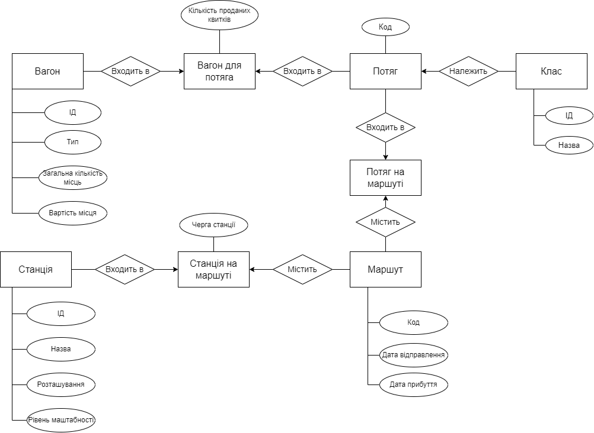
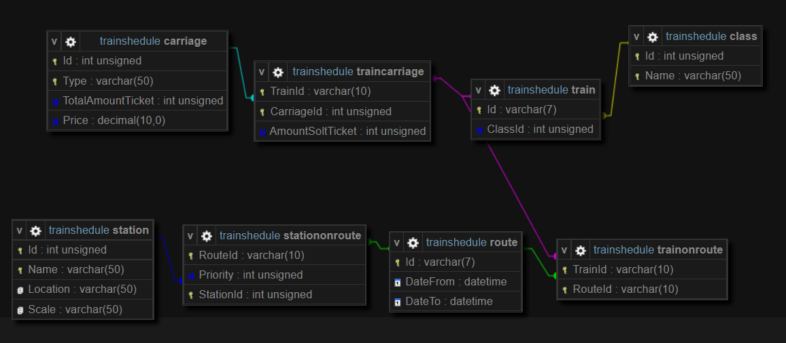

Загальними об'єктами предметної галузі "Розклад руху залізничного транспорту" являються
власне залізничний транспорт - потяги, що складаються з вагонів, належать до певного класу
, або ж рівня комфортну (стандартний, інтерсіті, тощо). Залізничний транспорт рухається згідно
графіку за певним маршутом. Сам же маршут складається з послідовного набору станцій в межах різних
країн. Отож, виокремимо кожен об'єкт заданої предметної області та вкажемо його характеристику.
Залізничний транспорт (або ж потяг) - об'єкт розкладу руху залізничного транспорту, що безпосередньо
здійснює перевезення вантажу, пасажирів, тощо. Складається з скінченної кількості вагонів. Як відомо, кожен потяг має свою назву, що
складається з декількох цифр та літер. Також залізничний транспорт можна віднести до певного класу.Клас залізничного транспорту - характеристика, що визначає первинні характеристики щодо об'єктів, які перевозяться транспортом
, швидкості транспорту (інтерсіті є швидшим ніж стандартний потяг), рівня комфорту (інтерсіті+ є більш комфортним, ніж інтерсіті).Вагон потяга - об'єкт, що містить певний простір. Якщо ми говоримо про пасажирські потяги, цей простір займають місця, де пасажири сидять/лежать протягом усієї
дороги до місця призначення. Кожне місце закріплюється за пасажиром придбаним квитком. Кількість місць у вагоні є скінченною.Маршут - об'єкт, що являє собою скінченну сукупність станцій. Дана сукупність є послідовною, впорядкованою, проте не унікальною. Коли
потяг виходить на маршут - він має дату та час відправлення і дату та час прибуття. Маршут також має свій унікальний код, який переважно використовують співробітники
залізниці.Станція - об'єкт, що представляє собою місця зупинки потягів, знаходиться у місті, містчеку, СМТ та селищах. Деякі станції минуються потягами, якщо вони є маломаштабні,
тобто знаходяться в СМТ/селищі.
Інфологічна модель

Перелік сутностей та їх атрибутів
Потяг - сутність представлення назви та класу потяга.
Атрибути : код, клас.Клас - сутність представлення назв класів таких, як інтерсіті, інтерсіті+, тощо.
Атрибути : ІД, назва.Вагон - сутність представлення типів вагонів, кількості місць у вагоні, та вартості одного місця.
Атрибути : ІД, тип, загальна кількість місць, вартість місця.Вагон для потяга - асоціативна таблиця представлення належності вагона до потяга, зокрема скільки у даному вагоні даного потяга продано місць.
Атрибути : кількість проданих місць.Маршут - сутність представлення сукупності станцій, з датою відправлення та прибуття потяга на даному маршуті.
Атрибути : код, дата відправлення, дата прибуття.Станція - сутність представлення певного об'єкта транспортної сфери, що має на увазі збереження даних про розташування, найменування, тощо.
Атрибути : ІД, назва, розташування (країна), рівень маштабності (місто/містечко або смт/село).Поїзд на маршуті - асоціативна таблиця представлення належності потяга до маршуту.Станція на маршуті - асоціативна таблиця представлення належності станції до маршуту.
Атрибути : черга станції на маршуті.
Даталогічна модель

Перелік сутностей та їх атрибутів
Потяг - сутність представлення назви та класу потяга.
Атрибути : код, ІД класу.Клас - сутність представлення назв класів таких, як інтерсіті, інтерсіті+, тощо.
Атрибути : ІД, назва.Вагон - сутність представлення типів вагонів, кількості місць у вагоні, та вартості одного місця.
Атрибути : ІД, тип, загальна кількість місць, вартість місця.Вагон для потяга - асоціативна таблиця представлення належності вагона до потяга, зокрема скільки у даному вагоні даного потяга продано місць.
Атрибути : ІД вагона, код потяга, кількість проданих місць.Маршут - сутність представлення сукупності станцій, з датою відправлення та прибуття потяга на даному маршуті.
Атрибути : код, дата відправлення, дата прибуття.Станція - сутність представлення певного об'єкта транспортної сфери, що має на увазі збереження даних про розташування, найменування, тощо.
Атрибути : ІД, назва, розташування (країна), рівень маштабності (місто/містечко або смт/село).Поїзд на маршуті - асоціативна таблиця представлення належності потяга до маршуту.
Атрибути : код потяга, ІД маршруту.Станція на маршуті - асоціативна таблиця представлення належності станції до маршуту.
Атрибути : ІД станції, ІД маршруту, черга станції на маршруті.
Зв'язки :
Клас - Потяг : Багато - ОдногоПотяг - Потяг на маршруті : Багато - ОдногоМаршрут - Потяг на маршруті : Багато - ОдногоСтанція - Станція на маршруті : Багато - ОдногоМаршрут - Станція на маршруті : Багато - ОдногоВагон - Вагон в поїзді : Багато - ОдногоПотяг - Вагон в поїзді : Багато - Одного
|